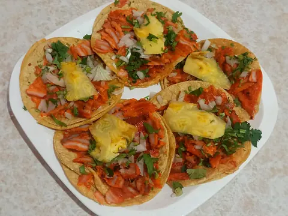
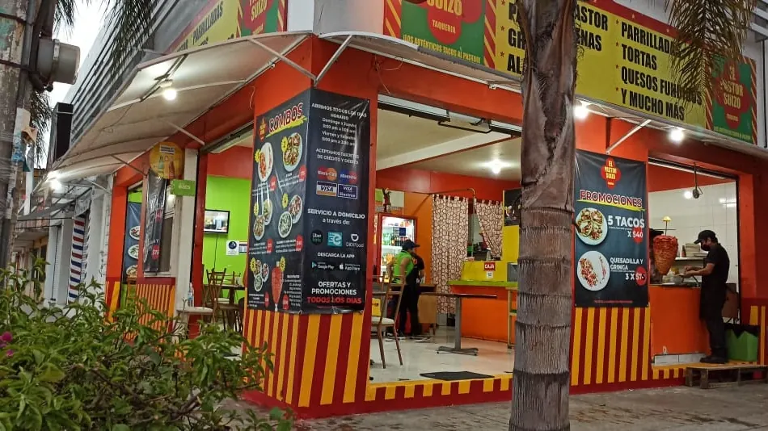
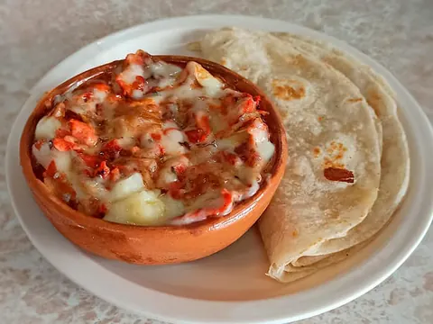
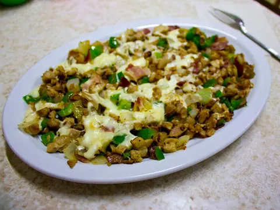
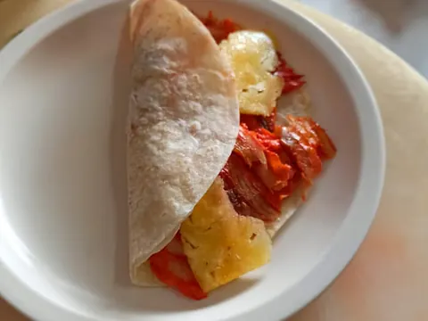
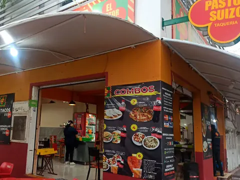
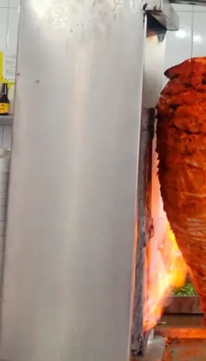
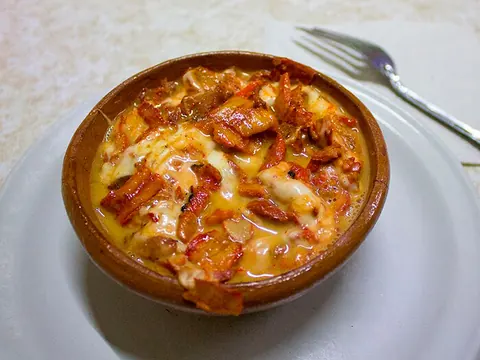
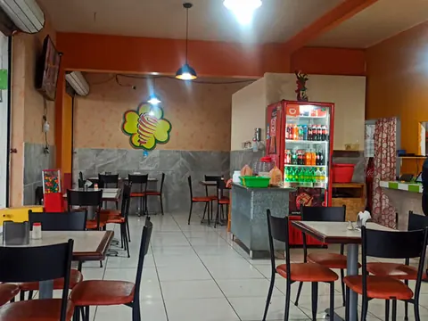

Orden de al pastor
4 tacos, papa con mantequilla y cebollita asada.
$70

Tacos desde $14. Abrimos a las 5 de la tarde.

4 tacos, papa con mantequilla y cebollita asada.

También de chorizo o cerdo.

Pimiento, cebolla, tocino y queso.

También de chorizo.
Agregar los manda al pedido de más abajo.
Con queso +$3. En tortilla de harina +$15. Orden de 4 tacos con papa desde $70.
Aguas frescas de jamaica y horchata desde $23.
Precios de la carta de mayo 2024. Confirma al pedir.
Cada taco que pides baja el trompo. Elige y mándalo por WhatsApp.
Pastor, bistec de cerdo o chorizo. Gringas y quesadillas 3x$105.
Promos de mayo 2024. Confirma que sigan vigentes.

Cena
de esquina.
Calificación en Google
Sobre su atención, desde que abrieron me han tratado con mucha amabilidad, algunos ya hasta me ubican, y además son muy rápidos con la atención. Y sobre la comida, me parece excelente, muy rica y de excelente calidad. Aparte, el lugar siempre está limpio. 100/100!!
Hernández Moya MichaelHace un mes · Restaurant Guru
Realmente uno de esos lugares pequeños y escondidos que lo dejan a uno fascinado. Todo estaba buenísimo, los precios muy accesibles, la comida ni hablar; desde el agua fresca hasta el alambre y la papa horneada, todo muy bien hecho, las porciones muy generosas y la atención muy buena. Sin duda un lugar que vale la pena conocer.
Eva EMarzo 2020 · Wanderlog
Los tacos excelentes, como siempre.
Eduardo RodriguezHace un mes · Restaurant Guru
Los tacos al pastor sí llevan piña
Seni RománHace un mes · Restaurant Guru



Av. Arqueros 302, esquina Av. Perseo
Jesús Gómez Portugal, 20250 Aguascalientes
Revisando horario…
Con estacionamiento, pago con tarjeta y envío por Uber Eats, DiDi Food y Rappi.
Pásanoslo por el mismo chat donde te llegó esta muestra.